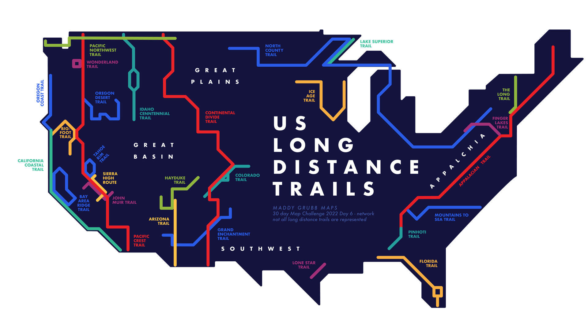

July 2021
In the summer of 2021 I was living in Bozeman Montana. I had secured 3 weeks off of work with the ambitious intent to thru hike the Colorado Trail. The planning was a mess and everything went wrong. But the walk itself was wonderful and gorgeous, albeit fast for my little legs. It was also a record monsoon season in the rockies, and I don't think I saw more than a half day without pouring rain.
I made a goofy video, and it seems to be the only thing that survived out of all the pictures and videos I took on the camera from this month.
I also illustrated a map that I ended up quite liking, showing some of things from my walk.